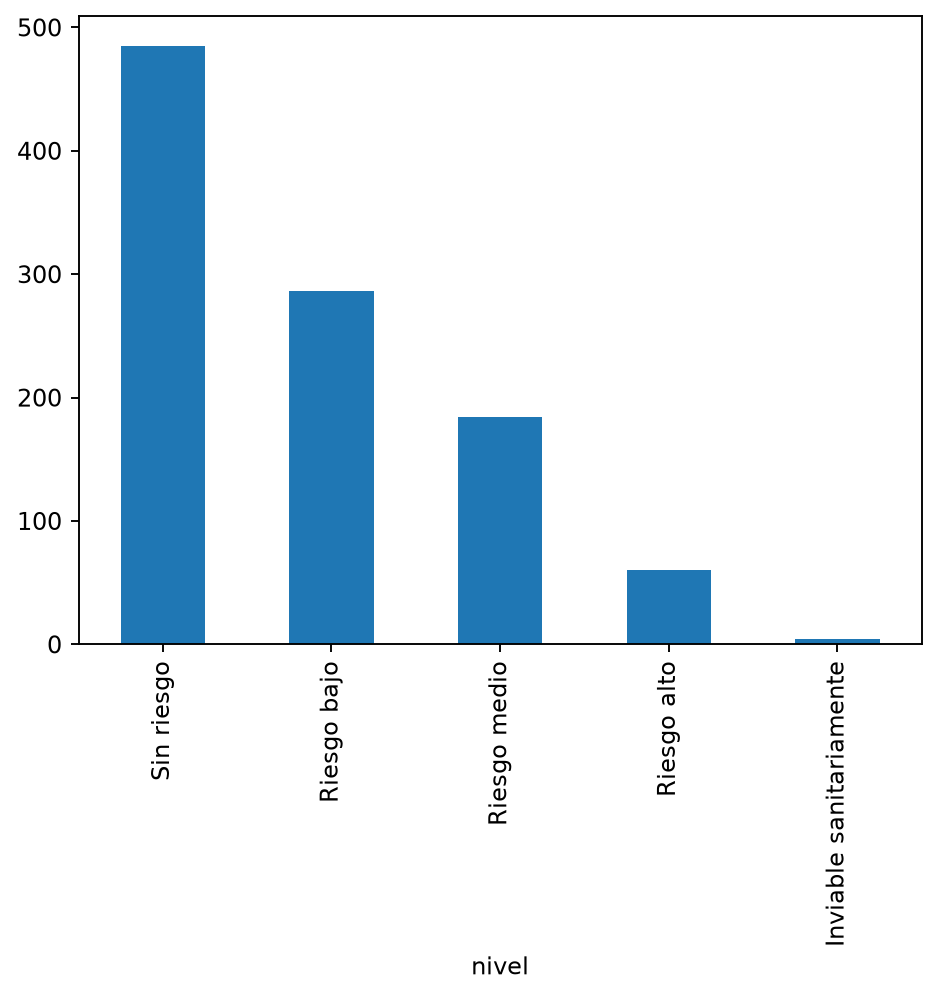

Guía de repaso · Sesión 4
Leer, filtrar y resumir:
primeros datos con pandas
Definiciones, ejemplos y ejercicios para repasar lo que vimos en clase.

Curso libreIntroducción a la Programación en Python y R
Semestre2026-2
Estudiante auxiliarYony Sebastián Chaparro Mesa
Material del cursoMoodle FCE

Unidad de Informática · Facultad de Ciencias Económicas
Universidad Nacional de Colombia, Sede Bogotá
uniic_bog@unal.edu.co
Cómo usar esta guía
Esta guía resume la cuarta sesión del curso. Cada tema tiene definiciones (recuadros azules), ejemplos de código con su salida y advertencias sobre los errores más comunes (recuadros amarillos).
La mejor forma de repasar es con Google Colab abierto: escribe cada ejemplo, ejecútalo y compara tu salida con la de la guía. Pon cada ejemplo en su propia celda, porque Colab solo muestra automáticamente el resultado de la última línea.
| Tema | Qué deberías poder hacer al terminar |
|---|
| 1. Dataset | Reconocer las filas (casos) y las columnas (variables) de una tabla. |
| 2. Archivo CSV | Explicar cómo guarda una tabla un archivo de texto. |
| 3. Nuestro dataset | Explicar qué mide el IRCA y de dónde vienen los datos. |
| 4. Leer con pandas | Cargar un CSV en un DataFrame con read_csv(). |
| 5. Explorar | Usar head(), shape, columns e info(). |
| 6. Seleccionar | Elegir una o varias columnas. |
| 7. Filtrar | Conservar solo las filas que cumplen una condición. |
| 8. Resumir | Calcular promedios y contar categorías con mean() y value_counts(). |
| 9. Graficar | Hacer una gráfica de barras en una línea. |
| 10. Errores | Reconocer y corregir los errores más frecuentes con pandas. |
Al final encontrarás un resumen, un glosario, ejercicios para practicar y sus soluciones.
1¿Qué es un dataset?
En la sesión 3 guardamos varios datos en una lista y vimos que un diccionario describe un solo caso con nombres. Una tabla junta las dos ideas: varias cosas de muchos casos.
Lista: muchos valores de una cosa
irca = [1.7, 0.3, 5.0]
Diccionario: varias cosas de un solo caso
fila = {"municipio": "Medellín", "irca": 1.7}
DefiniciónUn dataset es un conjunto de datos organizado, normalmente en forma de tabla. Cada fila es una observación (un caso) y cada columna es una variable (algo que sabemos de cada caso).
En esta tabla, la fila resaltada es un municipio, Amagá, y la columna resaltada es una variable, su IRCA:
| departamento | municipio | irca | nivel |
|---|
| Antioquia | Medellín | 1.7 | Sin riesgo |
| Antioquia | Abejorral | 0.3 | Sin riesgo |
| Antioquia | Amagá | 31.3 | Riesgo medio |
Cada columna guarda un solo tipo de dato: irca es un número decimal (float) y nivel es texto (str), los mismos tipos de la sesión 1.
2¿Qué es un archivo CSV?
DefiniciónCSV significa Comma-Separated Values, valores separados por comas. Es un archivo de texto plano que guarda una tabla y que casi cualquier programa puede abrir.
departamento,municipio,irca,nivel,irca_urbano,nivel_urbano,irca_rural,nivel_rural
Antioquia,Medellín,1.7,Sin riesgo,0.8,Sin riesgo,4.8,Sin riesgo
Antioquia,Abejorral,0.3,Sin riesgo,0.3,Sin riesgo,,
- La primera línea trae los nombres de las columnas.
- Cada línea siguiente es una fila, y las comas separan las columnas.
- Abejorral termina en
,,: esas dos celdas están vacías, es decir, son datos faltantes.
- Si un texto tiene una coma, va entre comillas para no partir la columna:
"Bogotá, D.C.".
A diferencia de un archivo de Excel, un CSV guarda solo los datos: no tiene fórmulas, colores ni varias hojas.
3Nuestro dataset: el agua que tomamos
DefiniciónEl IRCA es el Índice de Riesgo de la Calidad del Agua para consumo humano. Va de 0 a 100: entre más alto, mayor es el riesgo de enfermedades relacionadas con la calidad del agua.
| Nivel de riesgo | IRCA | Municipios en 2025 |
|---|
| Sin riesgo | 0 a 5 | 485 |
| Riesgo bajo | 5.1 a 14 | 286 |
| Riesgo medio | 14.1 a 35 | 184 |
| Riesgo alto | 35.1 a 80 | 60 |
| Inviable sanitariamente | 80.1 a 100 | 4 |
Nuestro archivo tiene 1.019 municipios y 8 columnas, con datos de 2025:
| Columnas | Qué guardan |
|---|
departamento, municipio | Dónde queda el municipio. |
irca, nivel | El puntaje promedio anual del municipio y su nivel de riesgo. |
irca_urbano, nivel_urbano | Lo mismo, solo para el área urbana. |
irca_rural, nivel_rural | Lo mismo, solo para el área rural. |
Fuente: Instituto Nacional de Salud (SIVICAP), Calidad del Agua para Consumo Humano en Colombia, datos.gov.co. Licencia CC BY-SA 4.0. Usamos una versión adaptada para el curso.
OjoSolo están los municipios con dato en 2025, así que no aparecen todos los del país. Algunos nombres son distintos a los que usamos a diario: Cali aparece como Santiago de Cali. Y un mismo nombre puede estar en dos departamentos: hay una Armenia en Antioquia y otra en Quindío.
4Leer el archivo con pandas
Definiciónpandas es una librería de Python para trabajar con tablas. Una librería es código ya escrito que podemos reutilizar. Colab ya trae pandas instalado: solo hay que importarlo.
Este es el enlace del archivo. En el PDF puedes hacer clic en él o copiarlo:
https://raw.githubusercontent.com/YonyChaparro/CL---Introduccion-a-python-y-R/main/datos/agua_municipios_2025.csv
Pégalo en lugar de PEGA_AQUI_EL_ENLACE, dejando las comillas:
import pandas as pd
url = "PEGA_AQUI_EL_ENLACE"
df = pd.read_csv(url)
| Parte | Qué hace |
|---|
import pandas as pd | Carga pandas y le pone el apodo pd. |
url | Variable con la dirección del archivo. |
pd.read_csv(url) | Lee el archivo y arma la tabla. |
df | Variable que guarda la tabla. El nombre es una costumbre: podría llamarse de otra forma. |
Si al ejecutarlo no aparece nada, está bien: la tabla quedó guardada en df, igual que cuando guardamos un valor en una variable.
DefiniciónUn DataFrame es una tabla ya cargada en Python, con filas y columnas. Se parece a una hoja de cálculo, pero la manejamos con código.
type(df)
pandas.DataFrame
Según la versión de pandas, puedes ver pandas.core.frame.DataFrame. Es lo mismo.
OjoEl DataFrame no es el archivo: vive en la memoria de tu sesión de Colab. Lo que hagas con df no cambia el CSV. Si reinicias la sesión, debes ejecutar de nuevo la celda que lo lee.
5Explorar: las primeras preguntas
Antes de calcular nada, conviene mirar qué hay en la tabla.
head(): las primeras filas
df.head()
| departamento | municipio | irca | nivel | irca_urbano | nivel_urbano | irca_rural | nivel_rural |
|---|
| 0 | Antioquia | Medellín | 1.7 | Sin riesgo | 0.8 | Sin riesgo | 4.8 | Sin riesgo |
| 1 | Antioquia | Abejorral | 0.3 | Sin riesgo | 0.3 | Sin riesgo | NaN | NaN |
| 2 | Antioquia | Abriaquí | 5.0 | Sin riesgo | 5.0 | Sin riesgo | NaN | NaN |
| 3 | Antioquia | Alejandría | 0.2 | Sin riesgo | 0.2 | Sin riesgo | NaN | NaN |
| 4 | Antioquia | Amagá | 31.3 | Riesgo medio | 0.6 | Sin riesgo | 55.9 | Riesgo alto |
- Muestra 5 filas si no le dices otra cosa.
df.head(10) muestra 10.
- Los números de la izquierda son el índice. Empieza en 0, como las posiciones de una lista.
- NaN significa dato faltante. Son las celdas vacías del CSV.
shape y columns: el tamaño y los nombres
df.shape
(1019, 8)
El primer número son las filas y el segundo, las columnas.
df.columns
Index(['departamento', 'municipio', 'irca', 'nivel', 'irca_urbano',
'nivel_urbano', 'irca_rural', 'nivel_rural'],
dtype='str')
info(): tipos y datos faltantes
df.info()
<class 'pandas.DataFrame'>
RangeIndex: 1019 entries, 0 to 1018
Data columns (total 8 columns):
# Column Non-Null Count Dtype
--- ------ -------------- -----
0 departamento 1019 non-null str
1 municipio 1019 non-null str
2 irca 1019 non-null float64
3 nivel 1019 non-null str
4 irca_urbano 1010 non-null float64
5 nivel_urbano 1010 non-null str
6 irca_rural 432 non-null float64
7 nivel_rural 432 non-null str
dtypes: float64(3), str(5)
memory usage: 63.8 KB
- Non-Null Count: cuántos valores no faltan en cada columna.
- float64 es un número decimal y str es texto.
- A
irca_rural le faltan 587 valores: 1.019 − 432 = 587.
Según la versión de pandas, puedes ver object en lugar de str, y la primera línea y el uso de memoria pueden cambiar un poco. Para este curso significan lo mismo.
¿Con o sin paréntesis?
| Sin paréntesis: datos de la tabla | Con paréntesis: acciones |
|---|
df.shape, df.columns | df.head(), df.info() |
OjoUn dato faltante no es un cero. Que a un municipio le falte el IRCA rural significa que no tenemos ese dato, no que su agua rural esté sin riesgo. Antes de confiar en una columna, revisa cuánto le falta.
6Seleccionar columnas
Seleccionar es elegir columnas. Aquí agregamos .head(3) solo para ver menos filas.
Una columna: [ ]
df["municipio"].head(3)
0 Medellín
1 Abejorral
2 Abriaquí
Name: municipio, dtype: str
Varias columnas: [[ ]]
df[["municipio", "irca"]].head(3)
municipio irca
0 Medellín 1.7
1 Abejorral 0.3
2 Abriaquí 5.0
Los corchetes de adentro son una lista de nombres, la misma de la sesión 3. Una sola columna se llama Series; varias columnas siguen siendo un DataFrame.
OjoCon un solo par de corchetes, df["municipio", "irca"] produce KeyError. Para pedir varias columnas se necesitan los dos pares.
7Filtrar filas
DefiniciónFiltrar es conservar solo las filas que cumplen una condición. Pandas revisa la condición en cada fila y se queda con las que dan True.
La condición sola da una columna de True y False:
df["irca"] > 35
0 False
1 False
2 False
3 False
4 False
...
1014 False
1015 False
1016 False
1017 False
1018 False
Name: irca, Length: 1019, dtype: bool
Al envolverla en df[ ], quedan solo las filas con True. Guardamos el resultado en otra variable y contamos sus filas con len():
altos = df[df["irca"] > 35]
len(altos)
64
| municipio | irca | irca > 35 |
|---|
| 0 | Medellín | 1.7 | False |
| 4 | Amagá | 31.3 | False |
| 36 | Cisneros | 46.5 | True |
| 109 | Titiribí | 49.4 | True |
| 113 | Urrao | 97.0 | True |
Son 64 de 1.019 municipios: los que tienen riesgo alto o agua inviable sanitariamente. Fíjate en que las filas conservan su índice original (36, 109, 113).
OjoFiltrar no cambia df: sigue teniendo 1.019 filas. Para usar el resultado después, guárdalo en otra variable, como altos.
Es un for + if en una sola línea
Filtrar es aplicar una condición (sesión 2) a cada fila, sin escribir el bucle (sesión 3). Estos dos programas responden lo mismo:
Con lo de la sesión 3
cuenta = 0
for valor in df["irca"]:
if valor > 35:
cuenta = cuenta + 1
print(cuenta)
64
Con pandas
print(len(df[df["irca"] > 35]))
64
Filtrar por texto
Para comparar se usa ==, igual que en la sesión 2:
cundi = df[df["departamento"] == "Cundinamarca"]
cundi[["municipio", "irca", "nivel"]].head(3)
municipio irca nivel
442 Agua de Dios 3.3 Sin riesgo
443 Albán 6.0 Riesgo bajo
444 Anapoima 1.9 Sin riesgo
OjoEl texto debe ser idéntico, con mayúsculas y tildes. Con "cundinamarca" quedan 0 filas, y con "Boyaca" tampoco se encuentra Boyacá. No sale ningún error: si la tabla queda vacía, revisa el texto del filtro.
Dos condiciones a la vez
Se unen con & (“y”), y cada condición va entre paréntesis:
narino = df[(df["departamento"] == "Nariño") & (df["irca"] > 35)]
len(narino)
12
8Resumir: de mil filas a una respuesta
mean(): el promedio de una columna
df["irca"].mean()
np.float64(10.501864573110893)
El número es 10.50…, y np.float64 solo indica su tipo. Según la versión, puede aparecer solo el número. Con print() tampoco aparece np.float64. La tabla muestra los resultados redondeados:
| Código | Resultado redondeado |
|---|
df["irca"].mean() | 10.50 |
cundi["irca"].mean() | 6.83 |
df["irca_urbano"].mean() | 8.64 |
df["irca_rural"].mean() | 21.83 |
df["irca"].max() | 97.0 |
En promedio, el IRCA rural es más alto que el urbano. Pero léelo con cuidado:
mean() ignora los NaN: el promedio rural usa solo los 432 municipios con ese dato.- Es un promedio entre municipios, no entre personas: cada municipio pesa lo mismo, sin importar cuánta gente vive allí.
value_counts(): contar categorías
df["nivel"].value_counts()
nivel
Sin riesgo 485
Riesgo bajo 286
Riesgo medio 184
Riesgo alto 60
Inviable sanitariamente 4
Name: count, dtype: int64
Ordena de mayor a menor cantidad. Un resultado solo sirve si sabes decir qué significa. Por ejemplo: casi la mitad de los municipios (485 de 1.019) está sin riesgo, pero 64 están en riesgo alto o tienen agua inviable sanitariamente.
9Una gráfica en una línea
df["nivel"].value_counts().plot(kind="bar")

- La línea se lee de izquierda a derecha: tomo la columna, cuento y grafico.
- Cada barra es una categoría, y su altura indica cuántos municipios tiene.
- Encima de la gráfica, Colab puede mostrar un texto como
<Axes: xlabel='nivel'>. Puedes ignorarlo.
10Errores frecuentes
| Error | Código con error | Qué significa | Corrección |
|---|
KeyError | df["Irca"] | Esa columna no existe. El nombre debe ser idéntico; revísalo con df.columns. | df["irca"] |
KeyError | df["municipio", "irca"] | Para varias columnas faltan los corchetes dobles. | df[["municipio", "irca"]] |
TypeError | df.shape() | shape es un dato de la tabla, no una acción: va sin paréntesis. | df.shape |
SyntaxError | df[df["irca"] = 5] | Un solo = asigna. Para comparar se usan dos. | df[df["irca"] == 5] |
NameError | df.head() | df aún no existe. Ejecuta primero la celda que lee el archivo. | Ejecuta df = pd.read_csv(url) |
Errores sin mensaje
Estos no muestran ningún error, pero el resultado no es el que querías:
- El texto del filtro no es idéntico:
df[df["departamento"] == "Boyaca"] da una tabla vacía.
- Olvidar los paréntesis de una acción:
df.head muestra un texto raro que empieza por <bound method, en lugar de las filas.
- Creer que filtrar cambió la tabla:
df sigue igual si no guardas el resultado en una variable.
- Dos resultados en una celda: Colab solo muestra automáticamente el de la última línea. Usa
print() o una celda para cada uno.
Tres ideas clave
- Un dataset es una tabla: las filas son casos y las columnas, variables.
- Con pocas líneas de pandas se pueden leer, filtrar y resumir datos reales.
- Filtrar es aplicar una condición a cada fila.
Todo el recorrido
Este es el camino de cualquier análisis pequeño, y el que usarás en el proyecto final:
Leer
Explorar
Seleccionar
Filtrar
Resumir
Graficar
| Paso | Código |
|---|
| Leer | df = pd.read_csv(url) |
| Explorar | df.head(), df.shape, df.columns, df.info() |
| Seleccionar | df["irca"], df[["municipio", "irca"]] |
| Filtrar | df[df["irca"] > 35] |
| Resumir | df["irca"].mean(), df["nivel"].value_counts() |
| Graficar | df["nivel"].value_counts().plot(kind="bar") |
Glosario
| Columna | Una variable de la tabla: lo que sabemos de cada caso. |
| CSV | Archivo de texto que guarda una tabla, con valores separados por comas. |
| DataFrame | Tabla cargada en Python, con filas y columnas. |
| Dataset | Conjunto de datos organizado, normalmente como una tabla. |
| Fila | Una observación de la tabla: un caso. |
| Filtrar | Conservar solo las filas que cumplen una condición. |
| Índice | Identificador de cada fila. Aparece a la izquierda de la tabla. |
| IRCA | Índice de Riesgo de la Calidad del Agua para consumo humano, de 0 a 100. |
| Librería | Código ya escrito que podemos importar y reutilizar. |
| NaN | Marca de un dato faltante. |
| pandas | Librería de Python para trabajar con tablas. |
pd | Apodo con el que importamos pandas. |
| Seleccionar | Elegir una o varias columnas. |
| Series | Una sola columna de un DataFrame. |
Ejercicios
Resuélvelos en Colab antes de mirar las soluciones. Primero lee el archivo en df, como en el tema 4. Avanza hasta donde llegues.
Ponte a prueba: ¿qué muestra cada línea?
Escribe tu respuesta antes de ejecutar el código. Usa una celda para cada fila de la tabla.
| Código | Tu respuesta |
|---|
df.head(3).shape | |
df[["municipio", "irca"]].shape | |
df[df["nivel"] == "sin riesgo"].shape | |
len(df[df["irca"] > 100]) | |
altos = df[df["irca"] > 35]
len(df) | |
len(df.head()) | |
Filtrar a mano
Sin ejecutar nada, escribe qué da la condición irca > 5 en cada fila. ¿Cuántas de estas filas conservaría el filtro?
| Municipio | irca | irca > 5 |
|---|
| Medellín | 1.7 | |
| Abriaquí | 5.0 | |
| Amagá | 31.3 | |
| Angostura | 11.0 | |
Encuentra el error
Di qué tipo de error produce cada línea y corrígela.
| Código | Error y corrección |
|---|
df["Municipio"] | |
df.columns() | |
df[df["nivel"] = "Riesgo alto"] | |
df["municipio", "nivel"] | |
Completa el código: el agua en Santander
Llena los espacios para filtrar el departamento de Santander, contar sus municipios y calcular su IRCA promedio.
santander = df[df["departamento"] ______ "Santander"]
print(len(______))
print(santander["______"].______())
Ejercicios de la clase
Básico1. ¿Cuántas filas y columnas tiene el dataset?
Básico2. Muestra las primeras 10 filas.
Básico3. Calcula el promedio de irca_urbano.
Intermedio4. Filtra los municipios con irca menor o igual a 5 y cuenta cuántos son.
Intermedio5. Usa value_counts() en departamento e interpreta el resultado en una frase.
Reto6. Filtra Boyacá con irca mayor que 5 y grafica su nivel. Pista: df[(cond1) & (cond2)].
Reto7. Formula tu propia pregunta y respóndela con código.
Consejo¿Te atascaste? Revisa los nombres con df.columns. Si un filtro da una tabla vacía, compara tu texto con el que aparece en los datos.
Soluciones
Hay muchas formas correctas de resolver cada ejercicio. Si tu código es distinto pero da el resultado correcto, también está bien.
Ponte a prueba
| Código | Salida | Por qué |
|---|
df.head(3).shape | (3, 8) | head(3) deja 3 filas y todas las columnas. |
df[["municipio", "irca"]].shape | (1019, 2) | Seleccionar deja todas las filas y solo 2 columnas. |
df[df["nivel"] == "sin riesgo"].shape | (0, 8) | En los datos dice Sin riesgo, con mayúscula: ninguna fila coincide y no sale error. |
len(df[df["irca"] > 100]) | 0 | El IRCA llega máximo a 100. |
altos = df[df["irca"] > 35]
len(df) | 1019 | Filtrar no cambia df; el resultado quedó en altos. |
len(df.head()) | 5 | Si no le dices otra cosa, head() deja 5 filas. |
Filtrar a mano
| Municipio | irca | irca > 5 |
|---|
| Medellín | 1.7 | False |
| Abriaquí | 5.0 | False: 5 no es mayor que 5 |
| Amagá | 31.3 | True |
| Angostura | 11.0 | True |
El filtro conservaría 2 filas: Amagá y Angostura.
Encuentra el error
| Código | Error | Corrección |
|---|
df["Municipio"] | KeyError: el nombre va en minúscula. | df["municipio"] |
df.columns() | TypeError: columns va sin paréntesis. | df.columns |
df[df["nivel"] = "Riesgo alto"] | SyntaxError: para comparar se usa ==. | df[df["nivel"] == "Riesgo alto"] |
df["municipio", "nivel"] | KeyError: faltan los corchetes dobles. | df[["municipio", "nivel"]] |
Completa el código
santander = df[df["departamento"] == "Santander"]
print(len(santander))
print(santander["irca"].mean())
86
13.024418604651162
Santander tiene 86 municipios con dato, y su IRCA promedio es 13.02, un valor dentro del rango de riesgo bajo.
Antes de la próxima sesiónTarea corta: escribe 3 preguntas que quieras responder con este dataset; las retomaremos en R. Obligatorio: crea tu cuenta gratis en Posit Cloud y verifica que puedes abrir un proyecto.
Próxima sesión: el puente a R. Lo mismo, en otro idioma. Trae tus dudas de esta guía a la clase o escríbelas en el Moodle FCE.